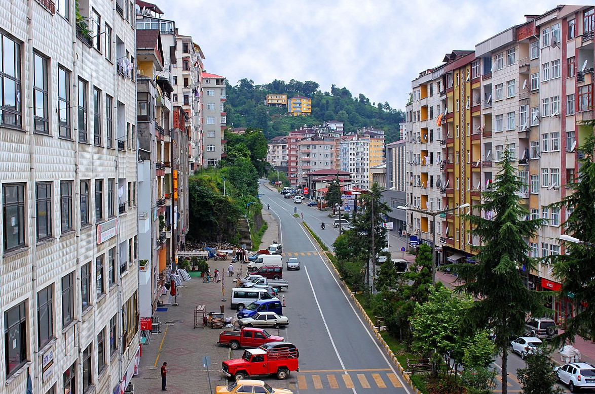

MÖ 64 yılında Pompeius tarafından Athenae adıyla kurulmuştur. İlçenin eski ismi Yunanca bir sözcüktür; akıl güzellik ve hikmet anlamına gelmektedir. 1888 tarihli Trabzon vilayeti salnamesine göre, Atina kazasında halk pagan tanrısı “Antas"a tapıyordu ve kasabanın adı da bu pagan tanrısından gelir. Bu tarihte Trabzon vilayetinin Trabzon sancağına bağlı olan Atina'nın nüfusu 2.313 hane ve 37.279 kişi olarak kaydedilmiştir. Kazanın ekonomisi tarım ve hayvancılığa dayanıyordu. Buğday, arpa, mısır, pirinç, fasulye, fındık ve keten tarımı yapılıyordu. Rençberlikle uğraşan halkın dışında ticaret ve esnaf erbabı da vardı. Denizde yunus avcılığı yapılıyor ve yakalanan yunusların yağı çıkarılarak dışarıya satılıyordu. Hayvancılık sığır, koyun ve keçi yetiştiriciliğine dayanıyordu. Atina kasabasında cuma günleri pazar kuruluyordu. Atina, keten ve yünden dokunan şalıyla da ünlüydü. Irmaklarda yakalanan alabalıktan havyar çıkarılıyordu.İlçenin adı 1928 tarihli Osmanlıca köy listesine Atina olarak geçer. Adı kısa bir süre sonra "Pazar" olarak değiştirilmiştir.Nitekim 1935 yılı genel nüfus sayımında Pazar olarak kaydedilmiştir.
Pazar, yüksek iç dağlarla kıyılara paralel uzanan bir Karadeniz sahil şerididir. Bu sahil, sıcak yazlarıyla ılımlı bir iklime sahiptir. (22 °C Ağustos'ta) ve serin kışlarıyla (7 °C Ocakta, kıyıda nadiren kar yağar), ancak çok ıslak ve nemlidir, yazın başlangıcından ayrı olarak yıl boyunca yoğun yağışlıdır. Yılda ortalama 50 gün güneşli geçer. Karadeniz rüzgarı sonbaharda soğuk, yazın ise ıslak ve nemlidir.
Tüm bu yağışlarla birlikte alan çok daha yeşil bir bölgeye sahip oluyor. Pazar Irmağı da dahil olmak üzere Karadeniz dağlarından gelen yağmur suyu ve kar erimi ile oluşan birçok akışla bölgeye daha fazla su gelir.
Burası tepelik bir bölgedir ve ana ekonomik faaliyeti çay yetiştiriciliğidir. Aynı zamanda Pazar ilçesinde balıkçılık, ticaret ve hafif sanayi (çay işleme)si bulunur. Çay, 1944 yılında ilçede dikilmiş ve şu anda mahsulü işlemek için Pazar'da üç fabrika bulunmaktadır. Pazar'daki ekilebilir arazinin% 65'i çay yetiştirmek için kullanılır. Çay dikimine başlanmadan önce, turunçgiller ve elmalar yetiştirildi, ancak günümüzde çoğunlukla durdu. İnsanların sebze ve kümes hayvanlarını yetiştirdikleri aile bahçelerindeki ağaçlar dışında, tütün, mısır, patates ve fasulye gibi bitkilerin ekimi için küçük alanlar vardır. Pazar, yüksek otlak alanlarında yaz otlatma de dahil olmak üzere otlak arazisine (yayla) sahiptir. Daha yüksek rakımlarda ağaç dikmek daha zordur.
Günümüzde Pazar bir pazar kasabası ve yerel çay ticaretinin merkezi konumundadır. Balıkçılık bir zamanlar ilçedeki önemli faaliyetlerden biriydi. Karadeniz kirlendiğinde geleneksel hamsi, kefal, ve kırmızı kefal dahil olmakla birlikte birçok balık türü soyunun tükenme tehlikesiyle karşı karşıya kaldı.
Çay ekimi başlayana kadar bu bölgedeki insanlar fakirleşmeye başladı ve yeni nesil daha iyi bir hayat için Avrupa ya da İstanbul'a göç etmeye başladı. Hayat ilçede hala zordur ve insanlar yaz aylarında çay hasadı olmasına rağmen ilçeyi hala terk etmektedir.